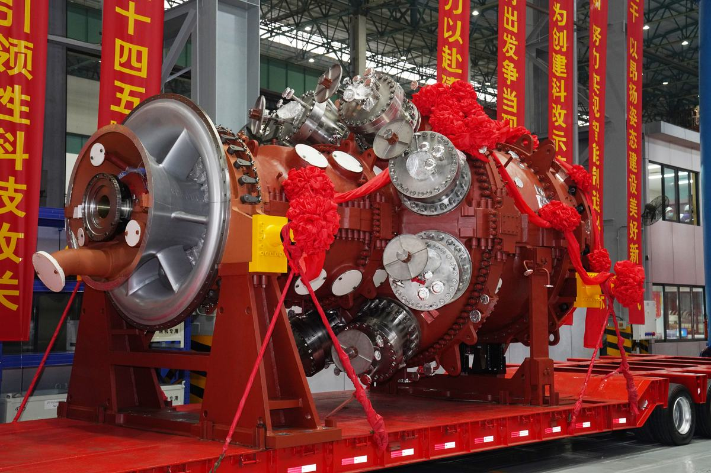
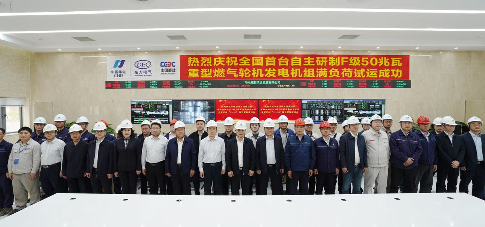
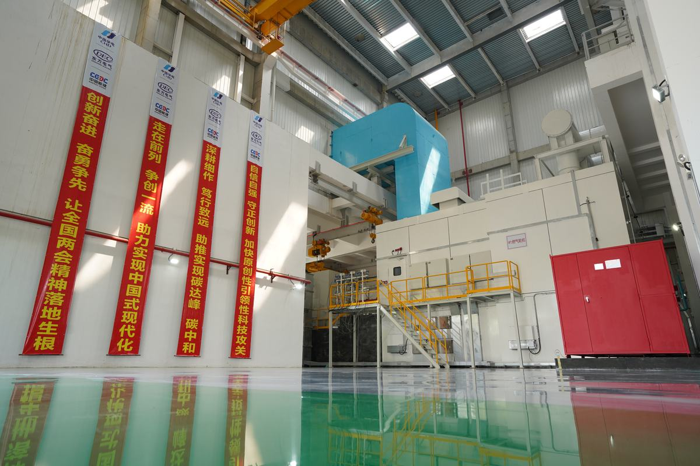

燃气轮机技术是多种技术集成的高新技术，是关系国家能源及国防安全的战略性新兴产业，已经成为一个国家科技水平、军事实力、综合国力的重要标志之一。在电力、能源开采与输送、舰船和分布式能源系统领域有着不可替代的战略地位和作用。但发达国家在燃气轮机技术方面对我国进行严格控制，其核心设计技术、热端部件制造与维修技术等对我国拒绝转让，我国尚未摆脱燃气轮机关键“卡脖子”核心技术受制于人的被动局面，给我国能源安全和社会发展带来巨大隐患。因此，一旦能够真正实现燃机自主研发、自主生产、打破国外的技术垄断，将对整个社会的发展起到重要的推动作用。
在国家重点基础研究发展计划的支持下，东方汽轮机从2009年开始在业内率先开展F级50MW重型燃气轮机（以下简称G50燃机）的自主研制工作。经过十余年的研究，攻克了高效高负荷多级跨音轴流压气机设计技术、高效低污染多燃料燃烧器设计技术、重型燃气轮机高效冷却设计技术、重型燃气轮机多物理场耦合结构强度设计技术、重型燃气轮机热端部件制造技术、燃气轮机关键部件服役与寿命评估技术等核心“卡脖子”技术，建立了G50燃机的设计、制造、试验和运行维护体系。2020年11月27日，在国内知名院士、专家、政府领导、客户代表的共同见证下，国内首台自主研发的F级50MW重型燃气轮机实现了满负荷稳定运行，验证了燃气轮机整机体系的有效性，实现了我国重型燃气轮机从0到1的突破。G50燃机性能水平与国际成熟商业机组基本相当，燃机ISO工况出力50MW，单循环效率36.5%，热耗率9863kJ/kWh。在研发过程中，授权国家发明专利44件、实用新型专利6件，主持制定了国家标准2项，参与制定国家标准6项、行业标准6项。
东方汽轮机研制的 F 级50MW 重型燃机已经成功应用于华电清远和中电德阳两个示范电站，分别入选能源领域首台（套）重大技术装备示范应用项目和国家能源局第一批创新发展示范项目，为G50燃机的示范应用铺平了道路。国内市场对于全国产化的燃气轮机关注度很高，潜在市场巨大。同时，相对煤电，G50燃机每年可减少碳排放约50万吨，环境效益十分显著。G50燃机自主研发项目还促进了我国燃机产业链的发展，形成相关燃机配套企业数量超50家，带动的产业链的经济规模超30亿。2020年和2022年G50燃机两次被评为“央企十大国之重器”，2019年设计团队获评国资委“优秀科技创新团队”。
重型燃气轮机具有高效、低碳、调峰能力强、占地面积小等优点，在联合循环发电、分布式能源、舰船动力、天然气管道增压等领域有着广泛重要的应用。“双碳”战略背景下，重型燃气轮机在新型电力系统中有着不可替代的作用和地位。东汽践行习近平总书记“实践反复告诉我们，关键核心技术是要不来、买不来、讨不来的”理念，立足自主研发，积极开展 F 级 50MW 重型燃气轮机的正向设计技术、关键部件制造技术、关键部件和整机试验技术、燃气轮机系统控制系统的研究，突破燃气轮机研发卡脖子技术，成功研制F 级 50MW 重型燃气轮机。本项目历时14年，在国外对燃气轮机关键核心技术严密封锁的情况下，攻克了高效高负荷多级跨音轴流压气机设计试验技术、高效低污染多燃料燃烧器技术、重型燃气轮机高效冷却技术、重型燃气轮机多物理场耦合结构强度设计技术、重型燃气轮机热端部件制造技术、燃气轮机关键部件服役与寿命评估技术，建立了国内首套F 级 50MW 重型燃气轮机的设计、制造、试验和运行维护体系，全面达到设计目标，形成了F 级燃气轮机系列核心技术。
该项目中取得的主要科技创新如下：
创新点1：打破技术封锁，建立 F 级重型燃气轮机燃烧器设计规范与体系和燃烧器全温全压试验体系及平台，设计了一款具有全完自主知识产权的燃烧器。
具体创新内容：本项目攻克了贫预混稳定燃烧技术、高效冲击冷却技术、回火预防技术、热声振荡预防技术等多项核心技术，建立了 F 级重型燃气轮机燃烧器设计规范与体系，并形成一套完整的优化设计程序，具备设计不同目标等级燃烧器的能力；开发了一款包含双径向旋流器、多点喷射喷嘴装置、火焰筒及过渡段等在内的具有完全自主知识产权的燃烧器。依托该项目，建立了高参数燃烧器全温全压试验平台，其中燃料能力为压力 4MPa、流量 20000Nm³/h,空气能力为 2.5MPa、流量 20Kg/s，采用先进燃烧试验测量技术，可以实现对流量分配、压力损失、点火特性、高温冷却能力、出口温度、污染物排放等指标的测 试，验证燃烧器设计理论。同时，实现了自主研发燃烧器全温全压验证体系从无到有的跨越，成功验证了设计目标，设计指标基本全部达标，形成了针对专有验证流程和数据处理方法，建立了相关试验体系，可满足 F~H 级燃气轮机燃烧器开发需求。
与国内外技术对比：经历几十年乃至上百年的发展，国际上已形成以 Siemens、GE、三菱和 Solar等燃气轮机领先集团，其产品丰富，占据绝大部分市场份额。相应地，这些企业都发展了各自独特的燃烧器设计技术，以及完整的试验验证体系和试验平台。该项目与之相比，无论在性能指标还是试验内容方面，均达到了 F 级主流燃气轮机燃烧器水平。随着国内燃气轮机自主研制工作的大力推进，相关企业也正在开展适用于燃气轮机机组的燃烧器技术研究。但由于国内燃气轮机事业起步晚、底子薄等原因，国内还没有成熟的，具有自主知识产权F级重型燃气轮机燃烧器产品，相应的设计体系和试验体系还有待建立与完善。目前国内对于重型燃气轮机燃烧器进行自主研发设计并进行试验研究的单位寥寥无几，多是对国外成熟的机组结构进行测绘或直接引进使用。东汽现已基本掌握燃烧器设计的原理、各部件设计方案的改进优化，已完成的试验结果（多轮迭代）达到设计目标，基于该项目已完成整机运行，具备提供商业燃气轮机的能力。这在国内燃气轮机自主研发领域是一项具有开创性的工作，同时也缩短了与国外 GE、西门子和三菱这类公司的差距。
图3.1 燃烧器设计模型和实物
创新点2：提出了F级重型燃气轮机高温透平叶片气动、冷却、强度一体化正向设计方法，建立了高温透平叶片正向设计体系和试验验证平台及体系，成功设计了 F 级 50MW重型燃气轮机高温透平叶片。
具体创新内容：
1）突破了燃机透平高效通流与气动设计技术
揭示了高温透平冷气掺混损失机理，建立了透平叶片损失模型及落后角模型，提出了高载荷叶型与跨声速叶型流动机理与设计方法，掌握了带冷气掺混的全三维燃气轮机透平设计分析技术，开发了一套完整的高温透平叶片气动设计和型线设计方法，完成了50 MW重型燃气轮机4级透平气动设计，级载荷系数在0.9~1.5之间，流量系数在0.3~0.7之间，反动度在0.3~0.6之间。
2）突破了燃机高温透平先进冷却设计技术
建立了高温透平叶片外部换热模型、内部换热模型、气膜冷却计算模型，掌握了透平叶片一维、二维、三维热分析技术和热流固耦合分析技术，提出了空心叶片结构设计技术及多学科迭代可靠性设计技术，开发了透平叶片冷却设计程序，完成了50MW重型燃气轮机高温透平空心叶片冷却设计。
3）形成了具有完全自主知识产权的 F 级重型燃气轮机等轴晶动叶片和静叶片技术标准
通过强度计算、性能检测、试验验证等方法，形成了具有完全自主知识产权的 F 级重型燃气轮机等轴晶动叶片和静叶片技术标准，包括通用技术标准、首件鉴定（FAI）技术标准、50MW 重型燃气轮机各叶片专用技术标准，其中通用技术标准和首件鉴定技术标准可适用于 F 级及以上更高等级重型燃气轮机等轴晶透平叶片，解决了自主系列化燃气轮机高温透平叶片无标准可依的难题。
4）建立了重型燃气轮机高温透平叶片试验平台和验证体系
高温透平叶片是涉及空气动力学、传热学、力学和材料学等多学科的复杂部件，仅依靠一维、二维设计与三维仿真无法验证其合理性，必须通过试验对设计和精铸的可靠性进行验证。本项目建立了平面叶栅试验台、环形叶栅试验台、多级透平试验台、透平叶片冷却试验台、透平叶片全温全压试验台等完整的试验平台，形成了针对专有验证流程和数据的处理方法，建立了高温透平叶片试验验证体系，可满足 F~H 级燃气轮机高温透平叶片试验验证需求。
图3.2 高温透平叶片气-热-力耦合分析流程
图3.3 50MW 重型燃气轮机高温透平第 1 级动叶 R1 冷却设计
与国内外同类技术对比：本项目完成了国内首台 F 级重型燃气轮机高温透平叶片自主正向设计，实测指标达到了设计值。日本 MHI、美国 GE、德国 Siemens 等国外一流燃气轮机公司经过几十年的发展，都形成了自己的高温透平叶片技术标准，建立了完善的透平叶片试验验证体系，并对我国实施严格的技术封锁。在国内率先形成了具有完全自主知识产权的可适用于 F 级及以上等级重型燃气轮机的等轴晶动叶片和静叶片技术标准，国内首次建立了完整的重型燃气轮机高温透平叶片试验平台和验证体系，各试验平台参数达到了国外先进水平，可满足我国 F 级及以上等级燃气轮机高温透平叶片试验验证需求。
表3.1 与国内外F级50MW重型燃机高温透平叶片技术指标对比
性能指标
本项目
国内
国外
设计指标
实测指标
透平绝热效率
达标，92.6%
除本项目外，国内还未见报道研制成功的F级50MW重型燃机高温透平叶片
91%
N1叶片冷却效率
>0.6
达标，0.63
>0.6
R1叶片冷却效率
>0.5
达标，0.52
>0.5
N1叶片最高温度
<930℃
达标，<880℃
<950℃
R1叶片最高温度
<930℃
达标，<928℃
<950℃
创新点3：突破高效高负荷多级跨音轴流压气机设计技术，建立大功率、大流量压气机试验台，突破进气大流量高精度测量技术，成功设计了一款压比18，多变效率超过91%的高性能压气机。
具体创新内容：
1）通过本项目掌握了多级轴流压气机的轴向匹配技术、高跨音叶型设计技术等关键技术。压气机的研发一般需经历从气动设计到试验验证的全过程，通常针对多级压气机，试验验证阶段需开展分段试验和整机试验，甚至还需要设计和试验的反复迭代。F级50MW燃气轮机压气机共17级，配置有进口可调导叶和出口导叶，并在4、8、12级静叶后配置了级间抽气。该母型压气机设计点的参数如下表所示。2014-2018年期间，G50压气机开展了分段和全级1/2缩尺的部件试验，下图所示为分段试验和全级试验件。完成了预期的性能试验，全级试验的关键性能与设计一致，设计体系通过了试验验证。
表3.2 G50压气机设计点参数
转速
流量
压比
多变效率
喘振裕度
6000rpm
18
>15%
图3.4 G50压气机试验件
2）建立大功率、大流量压气机试验台，突破进气大流量高精度测量技术。该试验台采用变频器+电机+液力变矩器的驱动方式，驱动功率25000kW，最高转速14000rpm，最大流量200kg/s。同时采用了先进了测量系统，并在此基础上建成了流量管在线标定系统，实现了不同量程范围流量的高精度测量。重型燃气轮机压气机进口流量一般较大，由于机型不同，试验方案不同，流量可以达到 40kg/s甚至 100kg/s 的流量水平。该流量等级远超普通流量计的测量范围，甚至超过了国内专业检定机构的标定能力。标准流量计的测量范围一般只有 5kg/s 左右，而国内专业检定机构所能提供的最大气源大约在 40kg/s 左右。对于更大流量的测量装置，国内现有资源是无法标定的，流量的测量精度将无法得到确认。为了适应燃气轮机压气机进口大流量的测量需求，以压气机本身作为气源，采用流量管方式测量压气机进口流量，通过实时测量其喉部的总温、总压、静压以及附面层压力，对流量管的测量精度进行在线标定，最终获得有效的流量系数。
图3.5 G50燃机压气机试验台
与国内外技术比较：相比于国外压气机效率高、级数少、压比高，我国重型燃气轮机设计技术基础较为薄弱。试验台采用25MW交流电机作为动力，是目前国内已投运功率最大的压气机试验平台，并采用变频器与液力变矩器相结合的调速模式实现高低搭配，满足从极低转速到满转速范围内任意转速精准控制的试验需求。目前国内航空发动机领域建有压气机试验台，但功率普遍较小，转速调节范围有限，难以实现全转速范围精准控制，无法满足重型燃气轮机研发需求。国外各大燃气轮机公司均建有自己的压气机试验平台，但一般作为商业秘密极少对外披露，公开报道的资料较少。
创新点4：突破了F级50MW重型燃气轮机高温叶片、涂层、燃烧器和拉杆组合转子等关键部件设计制造技术，建立了具有自主知识产权的F级燃气轮机制造规范和工艺体系。
具体创新内容：
1）研发了重型燃气轮机高温透平叶片陶瓷型芯制备、型壳制备和尺寸精度控制等精铸关键工艺，开发了等轴晶叶片多缺陷协调控制技术，保障了高温透平叶片长期服役运行的安全可靠性。建设了一条相对完善、先进的精密铸造中试线，掌握了燃气轮机透平叶片精铸关键技术，包括模具设计、陶瓷型芯制备、蜡模压制、陶瓷型壳制备、熔炼浇注、热等静压、脱芯等技术，建立了具有自主知识产权的透平等轴晶动、静叶片技术标准和工艺规范。
2）开发了“服役损伤状态分析—况权重评判—粘结层粉体寻优—粘结层/陶瓷层厚度确定”的修复再制造工艺，建立了重型燃气轮机修复再制造热障涂层性能数据库，规范了涂层修复再制造工艺流程。研制了基于“激光扫描逆向三维模型重构—复杂型面仿真—喷涂路径智能规划”的热障涂层修复再制造柔性闭环控制系统，提高了复杂异形高温部件涂层大面积修复再制造效率和质量。
3）开发了高温合金材料的复杂结构燃烧器等高温部件成型、焊接、加工及检验全流程制造技术，实现了50MW燃气轮机燃烧器完全自主生产制造。
4）开发了F级50MW重型燃气轮机拉杆组合转子轮盘、拉杆和端面齿等关键部件的精密制造技术。
图3.6 高温叶片制造
图3.7 燃烧器制造
图3.8 高温部件涂层
图3.9 G50燃机转子结构和制造过程
与国内外技术比较：日本 MHI、美国 GE、德国 Siemens 等国外一流燃气轮机公司经过几十年的发展，都形成了自己的高温部件制造标准和体系。a）对于高温叶片制造技术，国外仅日本 MHI、美国 GE、PCC 等少数几个公司掌握了重型燃气轮机高温透平叶片精密铸造技术，并对我国实施严格的技术封锁，垄断了全球绝大部分市场。这些公司都发展出了自己独特的高温透平叶片研制技术，一般而言，上述公司成熟机组、成熟工艺的高温透平等轴晶叶片精铸合格率最高能够达到 90%。我国重型燃气轮机高温透平叶片精密铸造研发起步晚、基础薄弱，东方电气集团东方汽轮机有限公司通过十余年的自主研发，在国内率先掌握了 F 级重型燃气轮机高温透平叶片精铸关键技术，形成了具有完全自主知识产权的精铸工艺规范，率先通过了 F 级重型燃气轮机满负荷运行验证。现已完成了 3 台份 50MW 重型燃气轮机高温透平叶片自主生产，精铸合格率超过了 80%。b）对于涂层技术，根据对标 GE 能源公司公开宣称资料，该公司涂层能满足部件 24000h 服役寿命，我公司修复再制造涂层的热部件同样经过 24000h 运行，涂层状态完好。c）对于燃烧器制造技术，国外厂家已经具有成熟的制造技术，但国内成体系的F级重型燃气轮机燃烧器的制造技术还处于发展阶段，本项目通过攻克镍基高温合金材料薄壁成形、焊接、变形控制等关键技术，掌握燃烧器的制造技术。通过固化工艺流程和检测标准，具备了批量生产的能力。d）对于拉杆组合转子技术，F级50MW重型燃气轮机转子涵盖了柔性支撑技术，周向拉杆技术，摩擦面传扭技术，端面齿传扭技术等重型燃气轮机拉杆组合转子关键技术。本项目拉杆组合转子与市场典型机组的主要技术指标相当，达到了F级重型燃气轮机拉杆组合转子的技术水平。
图3.10 国内首台完全自主知识产权的F级50兆瓦重型燃气轮机正式发运
图3.11 院士专家见证F级50MW燃气轮机顺利实现满负荷稳定运行
图3.12 新闻联播、人民日报等媒体报道F级50MW燃气轮机顺利实现满负荷稳定运行

